MANUAL DE OPERAÇÃO CÂMERA & TRANSMISSÃO
Guia prático para uso do DeckBoard, Youtube Studio, Fabebook Live, OBS Studio e Câmeras NEOID PTZ
INTRODUÇÃO
O aplicativo Voluts tem como objetivo auxiliar na criação de escalas, organizar eventos e facilitar a comunicação do líder com o liderado e vice-versa.
A seguir, haverão imagens com explicações e direções sobre o uso do app Voluts .
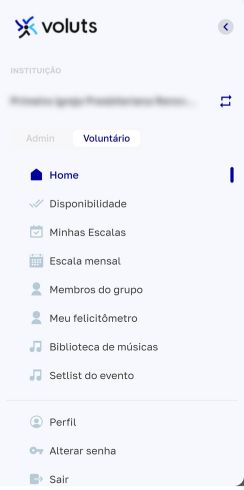
| MENU LATERAL |
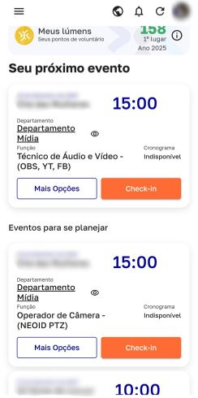
| TELA INICIAL |
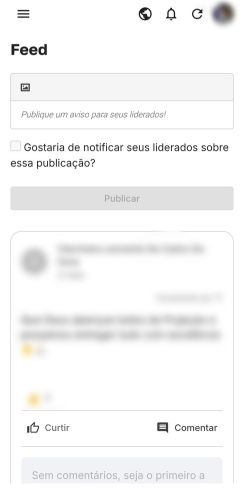
| FEED |
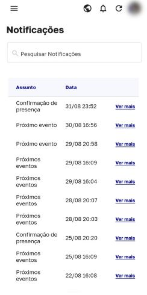
| NOTIFICAÇÕES |
| DIAS DISPONÍVEIS |
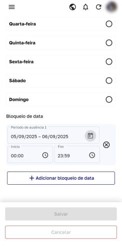
| BLOQUEIO DE DATA |
| MINHAS ESCALAS |
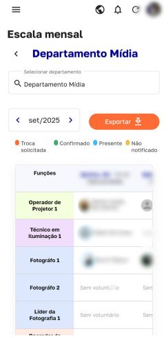
| ESCALA MENSAL |
| MEU FELICITÔMETRO |
| PERFIL |
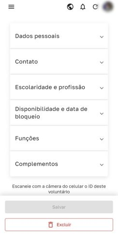
| INFORMAÇÕES GERAIS |
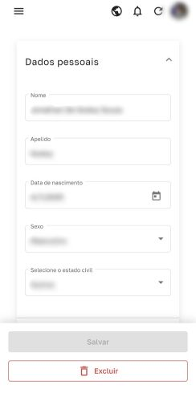
| DADOS PESSOAIS |
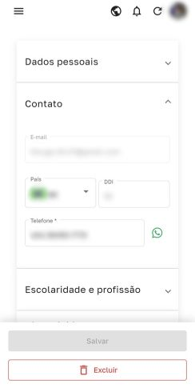
| CONTATO |
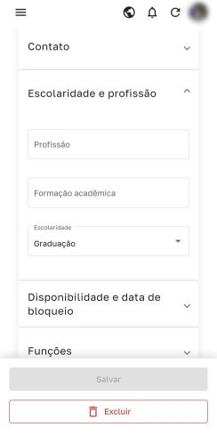
| ESCOLARIDADE |
| DISPONIBILIDADE |
| FUNÇÕES |
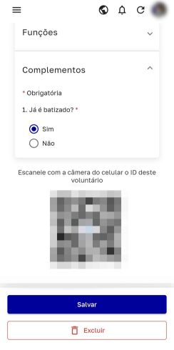
| COMPLEMENTOS |
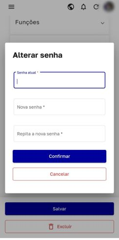
| ALTERAR SENHA |
| MENU LATERAL |
Neste menu, temos as opções de acesso a todas as áreas do aplicativo.
De forma prática, temos:
HOME: Página inicial DISPONIBILIDADE: Referente às escalas MINHAS ESCALAS: Eventos o qual está escalado ESCALA MENSAL: Escala geral de todos departamentos MEMBROS DO GRUPO: A definir... MEU FELICITÔMETRO: Chat público no Feed BLIBLIOTECA DE MÚSICAS: A definir... SETLIST DO EVENTO: A definir... PERFIL: Dados pessoais do usuário ALTERAR SENHA: Modificar senha da própria conta SAIR: Desconectar conta do app
| TELA INICIAL |
Na Tela inicial, temos:
MEUS LÚMENS: Pontuação de acordo com seu comprometimento e participação no app SEU PRÓXIMO EVENTO: Próximas ESCALAS ÍCONE DE GLOBO TERRESTRE: FEED ÍCONE DE SINO: NOTIFICAÇÕES ÍCONE DE LOOP: Atualizar página FOTO USUÁRIO: Acesso ao PERFIL
Observação: Os ícones estão presentes em todas as páginas do aplicativo
| FEED |
O Feed do Voluts funciona como um chat público, podendo ser utilizado para:
Comunicar atualizações Dialogar de forma aberta Reportar problemas Buscar ajuda
| NOTIFIAÇÕES |
As notificações de tudo o que ocorre no aplicativo, sendo elas:
Confirmação de presença Aviso de próximo evento Solicitação de troca Vericação de indisponibilidade Escala removida
| DIAS DISPONÍVEIS |
Aqui é colocado os dias em que possui disponibilidade fixa
Podendo selecionar cada dia da semana individualmente e selecionar o período livre (manhã, tarde, noite) ou o dia inteiro
Observação: sempre clique em "Salvar" para confirmar sua disponibilidade
| BLOQUEIO DE DATA |
Serve para avisar que estará indisponível em um determinado dia em epecífico
Para usar essa ferramenta, deve se:
Selecionar a data de início Selecionar a data final Selecionar a hora de início Selecionar a hora final
Para colocar apenas um dia em expecífico, basta:
Clicar no dia em específico (Ex.: 16/11/2025) E, clicar novamente nele Ficará algo como "16/11/2025 - 16/11/2025" Selecione o horário do dia que não estará disponível
Para indisponibilidade o dia inteiro, coloque "00:00" no "Início" e "23:59" no "Fim" Para um horário em específico, digite o momento que estará indisponível (Ex.: 14:00) e o horário que voltará a estar disponível (Ex.: 19:30)
| MINHAS ESCALAS |
Nesta página, terá acesso as suas escalas, quem também estará no dia em outros departamentos e realizar o check-in
Em cada bloco, temos as seguintes informações:
Data do evento Hora do evento Nome do evento Departamento Função escalada Cronograma Botão "Mais Opções" Botão "Check-in"
Dentro de "Mais Opções", temos:
Mesmas informações da tela de "Minhas Escalas" Informações do Evento Opção de ver quem também está escalado neste mesmo evento Visualizar "Setlist" Botão "Check-in" Botão "Preciso trocar" (Seleciona outro voluntário para a troca; Clica em "Solicitar troca")
Ao clicar em "Check-in", aparecerá:
Acesso a câmera do celular para escanear código QR e confirmar presença (no dia do evento) Aparecerá no rodapé da página "Não é possível fazer check-in. Verifique a data do evento" (no dia não pertencente ao evento)
Ao clicar em "Check-out", aparecerá:
Acesso a câmera do celular para escanear código QR e confirmar saída
| ESCALA MENSAL |
Nesta página, estará presente todas as escalas do mês, cada departamento e cada voluntário escalado para os eventos
Para visualizar a escala mensal, deve-se:
Clicar em "Selecionar departamento" Selecione o departamento mostrado Selecione o mês
Caso deseja ter acesso offline, clique em "Exportar" para baixar a mesma em .pdf
| MEU FELICITÔMETRO |
Usado para interação direta com o líder de seu departamento
| PERFIL |
Local onde está localizado todos os dados do usuário, podendo ser acessado:
Pelo ícone no canto superior direito
Pelo menu e acessar "Perfil"
Dentro de | PERFIL | , temos:
| INFORMAÇÕES GERAIS |
Informações do usuário, tais como:
| DADOS PESSOAIS |
Contém informações pessoais do usuário, sendo elas:
Nome Apelido Data de nascimento Sexo Estado civil
| CONTATO |
Contém informações para contato com o voluntário, sendo elas:
E-mail País DDI Telefone (WhatsApp)
| ESCOLARIDADE & PROFISSÃO |
Contém informações sobre profissão e formação acadêmica, sendo elas:
Profissão Formação acadêmica Escolaridade
| FUNÇÕES |
Cargos exercidos pelo voluntário. A ordem dos cargos indicam quais possuem maior importância. Do 1° ao último
| COMPLEMENTOS |
Informações necessárias para servir na igreja, sendo elas:
| ALTERAR SENHA |
Serve apenas para alterar a senha do usuário